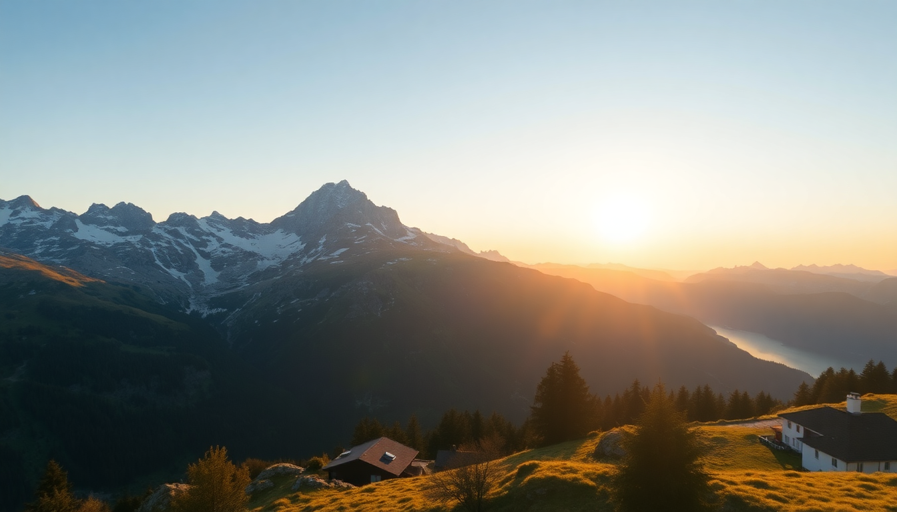

Best Time to Visit the Swiss Alps: Seasonal Guide

I’ve spent weeks bouncing between Interlaken, Zermatt, and Jungfraujoch across three different seasons, and I can tell you this: there’s no single “best” month. What works for a skier in January will ruin a hiker in July — and vice versa. This guide breaks down the trade-offs by season, so you can line up your trip with what you actually want to do.
When is the best time for hiking in the Swiss Alps?
If hiking is your main goal, aim for mid-June through early September. The snow melts off most trails by late June, and the high-altitude paths around Mürren and Wengen open fully by July. I did the Eiger Trail from Kleine Scheidegg in early July — patches of snow still lingered, but the views of the north face were clear and the trail wasn’t crowded.
- June: Lower trails (under 2,000m) are good, but expect mud and occasional closures at higher elevations.
- July–August: Peak hiking season. All trails open, but you’ll share them with plenty of others. The Lauterbrunnen Valley to Schilthorn route was packed by 9 a.m. in August.
- Early September: My personal favorite. Cooler temps, fewer families, and the larch trees start turning gold around Grindelwald.
One warning: June thunderstorms roll in fast. I got caught near Männlichen without a rain jacket — not fun. Pack layers regardless of the forecast.
What is winter like in Interlaken, Zermatt, and Jungfraujoch?
Winter runs December through March, and it’s a completely different beast. Interlaken stays relatively low (570m), so snow there is hit-or-miss — more often you’ll get cold rain. Head up to Grindelwald or Wengen for reliable snow cover. Zermatt, sitting at 1,620m, gets deep powder from December onward.
- December: Pre-Christmas weeks are quiet and cheaper. After December 20, prices spike and crowds flood the slopes.
- January–February: Best snow conditions. I skied the Gornergrat area in late January — the runs were pristine, and the Matterhorn Glacier Paradise offered year-round skiing. Downside: short daylight (sunset around 4:30 p.m.).
- March: Warmer days, slushy lower slopes, but longer light. Good for beginners who want softer snow.
One honest take: Jungfraujoch (“Top of Europe”) is brutally cold in winter. The observation deck hit -18°C when I visited in February. The train ride up from Kleine Scheidegg is spectacular, but budget 20 minutes max on the outdoor platform before you’ll want to retreat inside.
Should I visit the Swiss Alps in spring or autumn?
Spring (April–May) and autumn (October–November) are the shoulder seasons — and they come with real compromises. Many cable cars and mountain huts close for maintenance between mid-October and mid-May. I showed up in Lauterbrunnen in late April expecting to hike to Trümmelbach Falls — it was open, but the trail was a muddy mess.
- April: Snow still lingers on higher trails. Zermatt’s village is quiet, but the Sunnegga funicular runs. Interlaken feels sleepy.
- May: Lower trails start drying out. The Harder Kulm funicular in Interlaken reopens mid-May. Still, expect rain.
- October: Larch forests turn golden — the Five Lakes Walk near Zermatt is stunning in early October. But after mid-month, most lifts shut down.
- November: The dead zone. Fog, rain, and closures. I’d skip it unless you’re on a strict budget — hotel rates in Interlaken drop 40% compared to July.
When are the cheapest and least crowded months?
If your wallet or patience for crowds is thin, target May or October. May is a gamble with weather, but you’ll find hotel rooms in Wengen for half the August price. October gives you crisp air and empty trails — I walked through Mürren in mid-October and saw maybe ten other tourists.
- May: Low season. Interlaken hostels start at 30 CHF per night. Downside: many mountain restaurants are closed.
- October: Post-summer, pre-winter. Zermatt’s Gornergrat Bahn runs year-round, so you can still get the views without the queues.
- June and September: Moderate crowds and prices. You’ll pay more than May but less than July/August.
- Avoid: Christmas/New Year’s week and the first two weeks of February (European school holidays). Zermatt turns into a 500 CHF-per-night zoo.
What about train travel and logistics between these spots?
The Jungfrau Railway from Kleine Scheidegg to Jungfraujoch is the main artery — it runs year-round, but in winter, delays happen during storms. Between Interlaken and Zermatt, the Glacier Express is the scenic route (3 hours, 20 minutes). I booked it in late September and had the panoramic car almost to myself.
- Swiss Travel Pass: Worth it if you’re doing 3+ mountain trips. Covers trains, boats, and buses — but not the Jungfraujoch ticket (still 50% off).
- Zermatt is car-free: You park in Täsch and take the shuttle train. Saves hassle, but factor in the 20-minute transfer.
- Interlaken as a base: Smart move. It’s the hub for trains to Lauterbrunnen, Grindelwald, and Brienz. I stayed at Hotel Interlaken near the Ost station — easy access but nothing fancy.
FAQ
Is Jungfraujoch worth the high ticket price? I’ll be straight: it’s 210 CHF (2024 price) for the round-trip from Interlaken, and that stings. The view from the Sphinx Observatory is genuinely impressive, but the indoor areas feel like a tourist mall. If you’re on a budget, skip it and do the Gornergrat near Zermatt instead — similar altitude views for 110 CHF and far fewer crowds.
What should I pack for a summer trip to the Swiss Alps? Layers are non-negotiable. I wore a merino base layer, a fleece, and a windproof jacket in July at Jungfraujoch. Sunscreen is essential — the UV at 3,500m is brutal. And bring waterproof shoes; even in August, morning dew soaks through sneakers on the Eiger Trail.
Can I visit Interlaken, Zermatt, and Jungfraujoch in one week? Yes, but it’s tight. Spend 2 days in Interlaken (use it to hit Lauterbrunnen and Grindelwald), 2 days in Zermatt (Gornergrat and the village), and 1 day for Jungfraujoch. The train between Interlaken and Zermatt eats half a day — book the Glacier Express and treat the ride as the activity. You’ll be moving fast, but it’s doable.
Conclusion
- For hiking: Go mid-June to early September. Base yourself in Lauterbrunnen or Grindelwald for trail access.
- For skiing: January and February are peak. Zermatt has the most reliable snow and the longest season.
- For budget: May or October. Expect some closed lifts but empty trails and cheap rooms.
- For first-timers: Late June or early September. Good weather, moderate crowds, and all major attractions open.
- For avoiding regret: Don’t cram Jungfraujoch, Zermatt, and Interlaken into 5 days unless you love train stations. Pick two and go deeper.